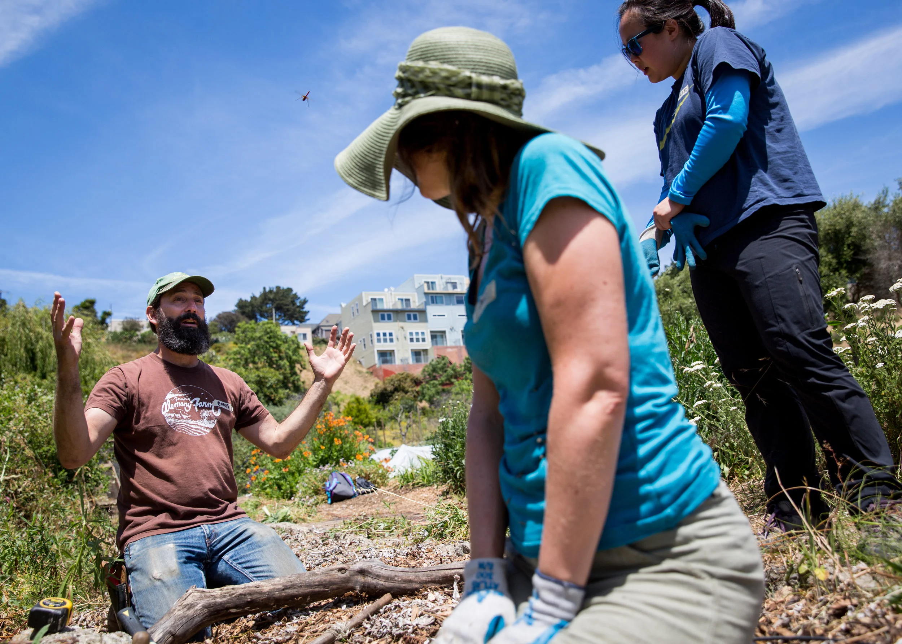
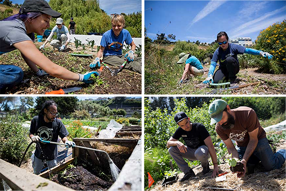

Urban Agriculture
Interns help with greenhouse work, irrigation, planting, harvest, fruit tree care, and volunteer support.
Alemany Farm internships give people hands-on experience in growing food, supporting community programs, and exploring food justice in practice.

Interns help with greenhouse work, irrigation, planting, harvest, fruit tree care, and volunteer support.
A joint internship with the Free Farm Stand focuses on harvest and produce distribution.
Interns build teamwork, time management, outdoor work experience, and a deeper understanding of farming.

Urban Agriculture Internships are typically 9 to 14 hours a week for 12 to 16 weeks. Food Security Internships include Friday hours at the farm and Sunday hours at the Free Farm Stand.
These internships are unpaid learning opportunities, and application timing may change from season to season.
Internships help participants learn sustainable gardening, volunteer coordination, community outreach, and food distribution while supporting Alemany Farm's mission.